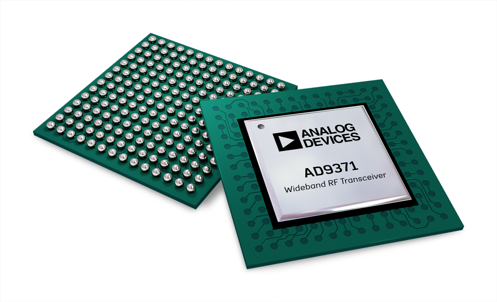

AD9371, AD9375 highly integrated, wideband RF transceiver Linux device driver¶
The AD9371 AD9375 is a highly integrated, wideband RF transceiver offering dual channel transmitters and receivers, integrated synthesizers, and digital signal processing functions. The IC delivers a versatile combination of high performance and low power consumption required by 3G/4G micro and macro base station equipment in both FDD and TDD applications. The AD9371 operates from 300 MHz to 6000 MHz, covering most of the licensed and unlicensed cellular bands. The IC supports receiver bandwidths up to 100 MHz. It also supports observation receiver and transmit synthesis bandwidths up to 250 MHz to accommodate digital correction algorithms. The transceiver consists of wideband direct conversion signal paths with state-of-the-art noise figure and linearity. Each complete receiver and transmitter subsystem includes dc offset correction, quadrature error correction, and programmable digital filters, eliminating the need for these functions in the digital baseband. Several auxiliary functions such as an auxiliary analog-to-digital converter (ADC), auxiliary digital-to-analog converters (DACs), and general-purpose input/outputs (GPIOs) are integrated to provide additional monitoring and control capability. An observation receiver channel with two inputs is included to monitor each transmitter output and implement interference mitigation and calibration applications. This channel also connects to three sniffer receiver inputs that can monitor radio activity in different bands.
The AD9375 device variant provides digital signal processing capabilities in the embedded ARM processor using closed-loop feedback signals from the observation receiver channels. These functions improve transmitter performance, measure system output, and reduce system power consumption. The list of functions includes the following: digital predistortion (DPD), closed-loop gain control (CLGC), and voltage standing wave ratio (VSWR) measurement.
Supported Devices¶
Evaluation Boards¶
Description¶
This is a Linux industrial I/O (IIO) subsystem driver, targeting RF Transceivers. The industrial I/O subsystem provides a unified framework for drivers for many different types of converters and sensors using a number of different physical interfaces (i2c, spi, etc). See IIO for more information.
Source Code¶
Status¶
| Source | Mainlined? |
|---|---|
| git | No |
Files¶
| Function | File |
|---|---|
| driver | drivers/iio/adc/ad9371.c |
| driver | drivers/iio/adc/ad9371_conv.c |
| include | drivers/iio/adc/ad9371.h |
| Mykonos API driver | drivers/iio/adc/mykonos |
Device Driver Customization¶
Please follow the link here for detailed options and examples:
Example Linux Device-Tree Initialization¶
The AD9371 driver is a spi-bus driver and can currently only be instantiated via device tree.
Required devicetree properties:
compatible: Should always be either “ad9371” or “ad9375”
reg: SPI slave select number
| Function | File |
|---|---|
| ADRV9371 Device Tree | adi-adrv9371.dtsi |
| ADRV9371 Device Tree | zynq-zc706-adv7511-adrv9371.dts |
| ADRV9371 Device Tree | socfpga_arria10_socdk_adrv9009.dts |
| ADRV9375 Device Tree | zynq-zc706-adv7511-adrv9375.dts |
Enabling Linux driver support¶
Configure kernel with “make menuconfig” (alternatively use “make xconfig” or “make qconfig”)
Note
The AD9371 driver depends on CONFIG_SPI
Adding Linux driver support¶
Configure kernel with “make menuconfig” (alternatively use “make xconfig” or “make qconfig”)
Linux Kernel Configuration
Device Drivers --->
<*> Industrial I/O support --->
--- Industrial I/O support
-*- Enable ring buffer support within IIO
-*- Industrial I/O lock free software ring
-*- Enable triggered sampling support
*** Analog to digital converters ***
[--snip--]
-*- Analog Devices High-Speed AXI ADC driver core
< > Analog Devices AD9361, AD9364 RF Agile Transceiver driver
<*> Analog Devices AD9371 RF Transceiver driver
< > Analog Devices AD6676 Wideband IF Receiver driver
< > Analog Devices AD9467, AD9680, etc. high speed ADCs
< > Analog Devices Motor Control (AD-FMCMOTCON) drivers
< > Generic FFT driver
<*> Generic AXI JESD204B configuration driver
[--snip--]
Frequency Synthesizers DDS/PLL --->
Direct Digital Synthesis --->
<*> Analog Devices CoreFPGA AXI DDS driver
Hardware configuration¶
Driver testing / API¶
Note
TIP: An example program which uses the interface can be found here:
General attribute naming convention:
| IIO sysfs attribute naming prefix | Target |
|---|---|
| Transceiver | |
| in_voltage0_[…] | RX1 |
| in_voltage1_[…] | RX2 |
| in_voltage2_[…] | Observation RX |
| out_voltage0_[…] | TX1 |
| out_voltage1_[…] | TX2 |
| out_altvoltage0_[…] | RX LO |
| out_altvoltage1_[…] | TX LO |
| out_altvoltage1_[…] | SNIFFER LO |
| Auxilary Converters | |
| in_voltage3_[…] | AUX ADC0 |
| in_voltage4_[…] | AUX ADC1 |
| in_voltage5_[…] | AUX ADC2 |
| in_voltage6_[…] | AUX ADC3 |
| out_voltage2_[…] | AUX DAC0 |
| out_voltage3_[…] | AUX DAC1 |
| out_voltage4_[…] | AUX DAC2 |
| out_voltage5_[…] | AUX DAC3 |
| out_voltage6_[…] | AUX DAC4 |
| out_voltage7_[…] | AUX DAC5 |
| out_voltage8_[…] | AUX DAC6 |
| out_voltage9_[…] | AUX DAC7 |
| out_voltage10_[…] | AUX DAC8 |
| out_voltage11_[…] | AUX DAC9 |
Note
Hint
This specifies any shell prompt running on the target
root:/> **cd /sys/bus/iio/devices/**
root:/sys/bus/iio/devices> ls
iio:device0 iio:device3 iio:device2 iio:device3 iio:device4 iio:device5 iio:device6
root:/sys/bus/iio/devices> **cd iio:device3**
root@analog:/sys/bus/iio/devices/iio:device3# ls -l
total 0
-rw-rw-rw- 1 root root 4096 May 31 14:49 calibrate
-rw-rw-rw- 1 root root 4096 May 31 14:49 calibrate_rx_qec_en
-rw-rw-rw- 1 root root 4096 May 31 14:49 calibrate_tx_lol_en
-rw-rw-rw- 1 root root 4096 May 31 14:49 calibrate_tx_lol_ext_en
-rw-rw-rw- 1 root root 4096 May 31 14:49 calibrate_tx_qec_en
-rw-rw-rw- 1 root root 4096 May 19 07:59 dev
-rw-rw-rw- 1 root root 4096 May 19 08:28 ensm_mode
-rw-rw-rw- 1 root root 4096 May 19 08:28 ensm_mode_available
-rw-rw-rw- 1 root root 32768 May 19 07:59 gain_table_config
-rw-rw-rw- 1 root root 4096 May 19 08:28 in_voltage0_gain_control_mode
-rw-rw-rw- 1 root root 4096 May 19 08:28 in_voltage0_hardwaregain
-rw-rw-rw- 1 root root 4096 May 19 08:28 in_voltage0_quadrature_tracking_en
-rw-rw-rw- 1 root root 4096 May 19 07:59 in_voltage0_rf_bandwidth
-rw-rw-rw- 1 root root 4096 May 19 07:59 in_voltage0_rssi
-rw-rw-rw- 1 root root 4096 May 19 07:59 in_voltage0_sampling_frequency
-rw-rw-rw- 1 root root 4096 May 19 08:28 in_voltage0_temp_comp_gain
-rw-rw-rw- 1 root root 4096 May 19 08:28 in_voltage1_gain_control_mode
-rw-rw-rw- 1 root root 4096 May 19 08:28 in_voltage1_hardwaregain
-rw-rw-rw- 1 root root 4096 May 19 08:28 in_voltage1_quadrature_tracking_en
-rw-rw-rw- 1 root root 4096 May 19 07:59 in_voltage1_rf_bandwidth
-rw-rw-rw- 1 root root 4096 May 19 07:59 in_voltage1_rssi
-rw-rw-rw- 1 root root 4096 May 19 07:59 in_voltage1_sampling_frequency
-rw-rw-rw- 1 root root 4096 May 19 08:28 in_voltage1_temp_comp_gain
-rw-rw-rw- 1 root root 4096 May 19 08:28 in_voltage2_gain_control_mode
-rw-rw-rw- 1 root root 4096 May 19 08:28 in_voltage2_hardwaregain
-rw-rw-rw- 1 root root 4096 May 19 07:59 in_voltage2_rf_bandwidth
-rw-rw-rw- 1 root root 4096 May 19 08:28 in_voltage2_rf_port_select
-rw-rw-rw- 1 root root 4096 May 19 07:59 in_voltage2_rssi
-rw-rw-rw- 1 root root 4096 May 19 07:59 in_voltage2_sampling_frequency
-rw-rw-rw- 1 root root 4096 May 19 08:28 in_voltage2_temp_comp_gain
-rw-rw-rw- 1 root root 4096 May 19 07:59 in_voltage3_offset
-rw-rw-rw- 1 root root 4096 May 19 07:59 in_voltage3_raw
-rw-rw-rw- 1 root root 4096 May 19 07:59 in_voltage3_scale
-rw-rw-rw- 1 root root 4096 May 19 07:59 in_voltage4_offset
-rw-rw-rw- 1 root root 4096 May 19 07:59 in_voltage4_raw
-rw-rw-rw- 1 root root 4096 May 19 07:59 in_voltage4_scale
-rw-rw-rw- 1 root root 4096 May 19 07:59 in_voltage5_offset
-rw-rw-rw- 1 root root 4096 May 19 07:59 in_voltage5_raw
-rw-rw-rw- 1 root root 4096 May 19 07:59 in_voltage5_scale
-rw-rw-rw- 1 root root 4096 May 19 07:59 in_voltage6_offset
-rw-rw-rw- 1 root root 4096 May 19 07:59 in_voltage6_raw
-rw-rw-rw- 1 root root 4096 May 19 07:59 in_voltage6_scale
-rw-rw-rw- 1 root root 4096 May 19 08:28 in_voltage_gain_control_mode_available
-rw-rw-rw- 1 root root 4096 May 19 08:28 in_voltage_rf_port_select_available
-rw-rw-rw- 1 root root 4096 May 19 07:59 name
-rw-rw-rw- 1 root root 4096 May 19 08:28 out_altvoltage0_RX_LO_frequency
-rw-rw-rw- 1 root root 4096 May 19 08:28 out_altvoltage1_TX_LO_frequency
-rw-rw-rw- 1 root root 4096 May 19 08:28 out_altvoltage2_RX_SN_LO_frequency
-rw-rw-rw- 1 root root 4096 May 19 08:28 out_voltage0_hardwaregain
-rw-rw-rw- 1 root root 4096 May 19 08:28 out_voltage0_lo_leakage_tracking_en
-rw-rw-rw- 1 root root 4096 May 19 08:28 out_voltage0_quadrature_tracking_en
-rw-rw-rw- 1 root root 4096 May 19 07:59 out_voltage0_rf_bandwidth
-rw-rw-rw- 1 root root 4096 May 19 07:59 out_voltage10_offset
-rw-rw-rw- 1 root root 4096 May 19 07:59 out_voltage10_raw
-rw-rw-rw- 1 root root 4096 May 19 07:59 out_voltage10_scale
-rw-rw-rw- 1 root root 4096 May 19 07:59 out_voltage11_offset
-rw-rw-rw- 1 root root 4096 May 19 07:59 out_voltage11_raw
-rw-rw-rw- 1 root root 4096 May 19 07:59 out_voltage11_scale
-rw-rw-rw- 1 root root 4096 May 19 08:28 out_voltage1_hardwaregain
-rw-rw-rw- 1 root root 4096 May 19 08:28 out_voltage1_lo_leakage_tracking_en
-rw-rw-rw- 1 root root 4096 May 19 08:28 out_voltage1_quadrature_tracking_en
-rw-rw-rw- 1 root root 4096 May 19 07:59 out_voltage1_rf_bandwidth
-rw-rw-rw- 1 root root 4096 May 19 07:59 out_voltage2_offset
-rw-rw-rw- 1 root root 4096 May 19 07:59 out_voltage2_raw
-rw-rw-rw- 1 root root 4096 May 19 07:59 out_voltage2_scale
-rw-rw-rw- 1 root root 4096 May 19 07:59 out_voltage3_offset
-rw-rw-rw- 1 root root 4096 May 19 07:59 out_voltage3_raw
-rw-rw-rw- 1 root root 4096 May 19 07:59 out_voltage3_scale
-rw-rw-rw- 1 root root 4096 May 19 07:59 out_voltage4_offset
-rw-rw-rw- 1 root root 4096 May 19 07:59 out_voltage4_raw
-rw-rw-rw- 1 root root 4096 May 19 07:59 out_voltage4_scale
-rw-rw-rw- 1 root root 4096 May 19 07:59 out_voltage5_offset
-rw-rw-rw- 1 root root 4096 May 19 07:59 out_voltage5_raw
-rw-rw-rw- 1 root root 4096 May 19 07:59 out_voltage5_scale
-rw-rw-rw- 1 root root 4096 May 19 07:59 out_voltage6_offset
-rw-rw-rw- 1 root root 4096 May 19 07:59 out_voltage6_raw
-rw-rw-rw- 1 root root 4096 May 19 07:59 out_voltage6_scale
-rw-rw-rw- 1 root root 4096 May 19 07:59 out_voltage7_offset
-rw-rw-rw- 1 root root 4096 May 19 07:59 out_voltage7_raw
-rw-rw-rw- 1 root root 4096 May 19 07:59 out_voltage7_scale
-rw-rw-rw- 1 root root 4096 May 19 07:59 out_voltage8_offset
-rw-rw-rw- 1 root root 4096 May 19 07:59 out_voltage8_raw
-rw-rw-rw- 1 root root 4096 May 19 07:59 out_voltage8_scale
-rw-rw-rw- 1 root root 4096 May 19 07:59 out_voltage9_offset
-rw-rw-rw- 1 root root 4096 May 19 07:59 out_voltage9_raw
-rw-rw-rw- 1 root root 4096 May 19 07:59 out_voltage9_scale
-rw-rw-rw- 1 root root 4096 May 19 07:59 out_voltage_sampling_frequency
drwxrwxrwx 2 root root 0 May 19 07:59 power
-rw-rw-rw- 1 root root 8192 May 19 07:59 profile_config
lrwxrwxrwx 1 root root 0 May 19 09:05 subsystem -> ../../../../../../../../bus/iio
-rw-rw-rw- 1 root root 4096 May 19 07:59 uevent
Note
Hint
Additional AD9375 specific attributes
-rw-rw-rw- 1 root root 4096 May 31 14:49 calibrate_clgc_en
-rw-rw-rw- 1 root root 4096 May 31 14:49 calibrate_dpd_en
-rw-rw-rw- 1 root root 4096 May 31 14:49 calibrate_vswr_en
-rw-rw-rw- 1 root root 4096 May 31 14:49 out_voltage0_clgc_current_gain
-rw-rw-rw- 1 root root 4096 May 31 14:49 out_voltage0_clgc_desired_gain
-rw-rw-rw- 1 root root 4096 May 31 14:49 out_voltage0_clgc_orx_rms
-rw-rw-rw- 1 root root 4096 May 31 14:49 out_voltage0_clgc_status
-rw-rw-rw- 1 root root 4096 May 31 14:49 out_voltage0_clgc_track_count
-rw-rw-rw- 1 root root 4096 May 31 14:49 out_voltage0_clgc_tracking_en
-rw-rw-rw- 1 root root 4096 May 31 14:49 out_voltage0_clgc_tx_gain
-rw-rw-rw- 1 root root 4096 May 31 14:49 out_voltage0_clgc_tx_rms
-rw-rw-rw- 1 root root 4096 May 31 14:49 out_voltage0_dpd_actuator_en
-rw-rw-rw- 1 root root 4096 May 31 14:49 out_voltage0_dpd_external_path_delay
-rw-rw-rw- 1 root root 4096 May 31 14:49 out_voltage0_dpd_model_error
-rw-rw-rw- 1 root root 4096 May 31 14:49 out_voltage0_dpd_reset_en
-rw-rw-rw- 1 root root 4096 May 31 14:49 out_voltage0_dpd_status
-rw-rw-rw- 1 root root 4096 May 31 14:49 out_voltage0_dpd_track_count
-rw-rw-rw- 1 root root 4096 May 31 14:49 out_voltage0_dpd_tracking_en
-rw-rw-rw- 1 root root 4096 May 31 14:49 out_voltage0_vswr_forward_gain
-rw-rw-rw- 1 root root 4096 May 31 14:49 out_voltage0_vswr_forward_gain_imag
-rw-rw-rw- 1 root root 4096 May 31 14:49 out_voltage0_vswr_forward_gain_real
-rw-rw-rw- 1 root root 4096 May 31 14:49 out_voltage0_vswr_forward_orx
-rw-rw-rw- 1 root root 4096 May 31 14:49 out_voltage0_vswr_forward_tx
-rw-rw-rw- 1 root root 4096 May 31 14:49 out_voltage0_vswr_reflected_gain
-rw-rw-rw- 1 root root 4096 May 31 14:49 out_voltage0_vswr_reflected_gain_imag
-rw-rw-rw- 1 root root 4096 May 31 14:49 out_voltage0_vswr_reflected_gain_real
-rw-rw-rw- 1 root root 4096 May 31 14:49 out_voltage0_vswr_reflected_orx
-rw-rw-rw- 1 root root 4096 May 31 14:49 out_voltage0_vswr_reflected_tx
-rw-rw-rw- 1 root root 4096 May 31 14:49 out_voltage0_vswr_status
-rw-rw-rw- 1 root root 4096 May 31 14:49 out_voltage0_vswr_track_count
-rw-rw-rw- 1 root root 4096 May 31 14:49 out_voltage0_vswr_tracking_en
-rw-rw-rw- 1 root root 4096 May 31 14:49 out_voltage1_clgc_current_gain
-rw-rw-rw- 1 root root 4096 May 31 14:49 out_voltage1_clgc_desired_gain
-rw-rw-rw- 1 root root 4096 May 31 14:49 out_voltage1_clgc_orx_rms
-rw-rw-rw- 1 root root 4096 May 31 14:49 out_voltage1_clgc_status
-rw-rw-rw- 1 root root 4096 May 31 14:49 out_voltage1_clgc_track_count
-rw-rw-rw- 1 root root 4096 May 31 14:49 out_voltage1_clgc_tracking_en
-rw-rw-rw- 1 root root 4096 May 31 14:49 out_voltage1_clgc_tx_gain
-rw-rw-rw- 1 root root 4096 May 31 14:49 out_voltage1_clgc_tx_rms
-rw-rw-rw- 1 root root 4096 May 31 14:49 out_voltage1_dpd_actuator_en
-rw-rw-rw- 1 root root 4096 May 31 14:49 out_voltage1_dpd_external_path_delay
-rw-rw-rw- 1 root root 4096 May 31 14:49 out_voltage1_dpd_model_error
-rw-rw-rw- 1 root root 4096 May 31 14:49 out_voltage1_dpd_reset_en
-rw-rw-rw- 1 root root 4096 May 31 14:49 out_voltage1_dpd_status
-rw-rw-rw- 1 root root 4096 May 31 14:49 out_voltage1_dpd_track_count
-rw-rw-rw- 1 root root 4096 May 31 14:49 out_voltage1_dpd_tracking_en
-rw-rw-rw- 1 root root 4096 May 31 14:49 out_voltage1_vswr_forward_gain
-rw-rw-rw- 1 root root 4096 May 31 14:49 out_voltage1_vswr_forward_gain_imag
-rw-rw-rw- 1 root root 4096 May 31 14:49 out_voltage1_vswr_forward_gain_real
-rw-rw-rw- 1 root root 4096 May 31 14:49 out_voltage1_vswr_forward_orx
-rw-rw-rw- 1 root root 4096 May 31 14:49 out_voltage1_vswr_forward_tx
-rw-rw-rw- 1 root root 4096 May 31 14:49 out_voltage1_vswr_reflected_gain
-rw-rw-rw- 1 root root 4096 May 31 14:49 out_voltage1_vswr_reflected_gain_imag
-rw-rw-rw- 1 root root 4096 May 31 14:49 out_voltage1_vswr_reflected_gain_real
-rw-rw-rw- 1 root root 4096 May 31 14:49 out_voltage1_vswr_reflected_orx
-rw-rw-rw- 1 root root 4096 May 31 14:49 out_voltage1_vswr_reflected_tx
-rw-rw-rw- 1 root root 4096 May 31 14:49 out_voltage1_vswr_status
-rw-rw-rw- 1 root root 4096 May 31 14:49 out_voltage1_vswr_track_count
-rw-rw-rw- 1 root root 4096 May 31 14:49 out_voltage1_vswr_tracking_en
Show device name
Note
Hint
This specifies any shell prompt running on the target
root:/sys/bus/iio/devices/iio:device3> **cat name**
ad9371-phy
Enable State Machine Controls
The AD9371 transceiver includes an Enable State Machine (ENSM), allowing real time control over the current state of the device. The ENSM has two possible control methods – SPI control (writing ensm_mode), and pin control.
Note
Hint
This specifies any shell prompt running on the target
root@analog:/sys/bus/iio/devices/iio:device3# **cat ensm_mode_available**
radio_on radio_off
Note
Hint
This specifies any shell prompt running on the target
root:/sys/bus/iio/devices/iio:device3> **cat ensm_mode**
radio_on
root:/sys/bus/iio/devices/iio:device3> **echo radio_off > ensm_mode**
root:/sys/bus/iio/devices/iio:device3> **cat ensm_mode**
radio_off
Local Oscillator Control (LO)
The AD9371 contains three fractional-N PLLs to generate the RF LOs used by the transmitter, receiver, and observation receiver. The tuning range supported by this driver covers 300MHz to 6GHz.
out_altvoltage0_RX_LO_frequency
out_altvoltage1_TX_LO_frequency
out_altvoltage2_RX_SN_LO_frequency
Note
Hint
This specifies any shell prompt running on the target
**cat out_altvoltage0_RX_LO_frequency**
2400000000
root:/sys/bus/iio/devices/iio:device3> **echo 2450000000 > out_altvoltage0_RX_LO_frequency**
root:/sys/bus/iio/devices/iio:device3> **cat out_altvoltage0_RX_LO_frequency**
2450000000
Note
Hint
This specifies any shell prompt running on the target
root:/sys/bus/iio/devices/iio:device3> **cat out_altvoltage1_TX_LO_frequency**
2450000000
Filter and Signal Path Configuration
Profiles
AD9371 uses profiles to designate different device configuration settings for the Tx/Rx/ORx/SnRx channels. When selecting a profile, note that Rx1 and Rx2 use the same profile; Tx1 and Tx2 use the same profile; ORx1 and ORx2 use the same profile; and SnRxA, SnRxB, and SnRxC use the same profile. The profile dictates how the digital filters, analog filters, clock rates, and clock dividers are configured in the device. Some specific parameters set by profiles include the IQ data rate, ADC clock rate, analog filter corners, FIR filter coefficients, and interpolation/decimation factors in the half band filters. Several profiles can be examined in the AD9371 Transceiver Evaluation Software for given device clock frequencies. If the desired profile exists in the software, it is recommended to setup the desired profile in and use the data structure values generated by the “Create Config.c File” button for the Tx/Rx/ORx/SnRx profile data structures. Custom profiles can be generated using other ADI software tools not described here MATLAB Profile/Filter Generator for AD9371.
Loading a Profile
Note
Hint
This specifies any shell prompt running on the target
root@analog:/sys/bus/iio/devices/iio:device3# **cat /usr/local/mykonos/profiles/lte20.txt > profile_config**
root@analog:/sys/bus/iio/devices/iio:device3#
RX Signal Path
The AD9371 contains dual receiver channels. Each Rx channel is a direct conversion system that contains a programmable attenuator stage, followed by matched I and Q mixers that down convert received signals to baseband for digitization. To achieve gain control, a programmed gain index map is implemented. This gain map distributes attenuation among the various Rx blocks for optimal performance at each power level. In addition, support is available for both automatic and manual gain control modes. The receiver includes S-? ADCs and adjustable sample rates that produce data streams from the received signals. The signals can be conditioned further by a series of decimation filters and a fully programmable 72-tap FIR filter with additional decimation settings. The sample rate of each digital filter block is adjustable by changing the decimation factors to produce the desired output data rate.
Querying the RX Sample Rate and Primary Signal Bandwidth
Note
Hint
This specifies any shell prompt running on the target
root:/sys/bus/iio/devices/iio:device3> **cat in_voltage0_sampling_frequency**
122880000
root@analog:/sys/bus/iio/devices/iio:device3# **cat in_voltage0_rf_bandwidth**
100000000
Observation RX Signal Path
The ORx operates in a similar manner to the main receivers. Each input is differential and uses a dedicated mixer. The ORx inputs share a baseband ADC and baseband section; therefore, only one can be active at any time. The mixed signal and digital section is identical in design and operation to the main receiver channels. This channel can monitor the Tx channels and implement error correction functions. It can also be used as a general-purpose receiver.
Querying the ORx Sample Rate
Note
Hint
This specifies any shell prompt running on the target
root@analog:/sys/bus/iio/devices/iio:device3# **cat in_voltage2_sampling_frequency**
245760000
root@analog:/sys/bus/iio/devices/iio:device3# **cat in_voltage2_rf_bandwidth**
200000000
Setting the Observation Path Source
When the ARM radio control is in ARM command mode, this attribute allows the user to selectively power-up or power-down the desired ObsRx data path.
OFF - SnRx path is disabled
ORX1_TX_LO – SnRx operates in observation mode on ORx1 with Tx LO synthesizer
ORX2_TX_LO – SnRx operates in observation mode on ORx2 with Tx LO synthesizer
INTERNALCALS – enables scheduled Tx calibrations while using SnRx path. The enableTrackingCals function needs to be called in RADIO_OFF state. It sets the calibration mask, which the scheduler will later use to schedule the desired calibrations. This command is issued in RADIO_OFF. Once the AD9371 moves to RADIO_ON state, the internal scheduler will use the enabled calibration mask to schedule calibrations whenever possible, based on the state of the transceiver. The Tx calibrations will not be scheduled until INTERNALCALS is selected and the Tx calibrations are enabled in the cal mask.
OBS_SNIFFER – SnRx operates in sniffer mode with latest selected Sniffer Input – for hardware pin control operation. In pin mode, the GPIO pins designated for ORX_MODE would select SNIFFER mode. Then MYKONOS_setSnifferChannel function would choose the channel.
ORX1_SN_LO – SnRx operates in observation mode on ORx1 with SNIFFER LO synthesizer
ORX2_SN_LO – SnRx operates in observation mode on ORx2 with SNIFFER LO synthesizer
SN_A – SnRx operates in sniffer mode on SnRxA with SNIFFER LO synthesizer
SN_B – SnRx operates in sniffer mode on SnRxB with SNIFFER LO synthesizer
SN_C – SnRx operates in sniffer mode on SnRxC with SNIFFER LO synthesizer
Note
Hint
This specifies any shell prompt running on the target
root@analog:/sys/bus/iio/devices/iio:device3# **cat in_voltage_rf_port_select_available**
OFF INTERNALCALS OBS_SNIFFER SN_A SN_B SN_C ORX1_TX_LO ORX2_TX_LO ORX1_SN_LO ORX2_SN_LO
root@analog:/sys/bus/iio/devices/iio:device3# **echo ORX1_TX_LO > in_voltage2_rf_port_select**
root@analog:/sys/bus/iio/devices/iio:device3# **cat in_voltage2_rf_port_select**
ORX1_TX_LO
TX Signal Path
The AD9371 employs a direct conversion transmitter architecture consisting of two identical and independently controlled channels that provide all the digital processing, mixed signal, and RF blocks necessary to implement a direct conversion system. Both channels share a common frequency synthesizer. The digital data from the JESD204B lanes pass through a fully programmable 96-tap FIR filter with optional interpolation. The FIR output is sent to a series of conversion filters that provide additional filtering and data rate interpolation prior to reaching the DAC. Each DAC has an adjustable sample rate and is linear up to full scale. Once converted to baseband analog signals, the in-phase (I) and quadrature (Q) signals are filtered to remove sampling artifacts, and then the signals are fed to the upconversion mixers. At the mixer stage, the I and Q signals are recombined and modulated onto the carrier frequency for transmission to the output stage. Each transmit chain provides a wide attenuation adjustment range with fine granularity to help designers optimize SNR.
Querying the TX Sample Rate and Primary Signal Bandwidth
Note
Hint
This specifies any shell prompt running on the target
root:/sys/bus/iio/devices/iio:device3> **cat out_voltage_sampling_frequency**
245760000
root@analog:/sys/bus/iio/devices/iio:device3# **cat out_voltage0_rf_bandwidth**
75000000
RX Gain Control
The AD9371 main receivers (Rx1, Rx2) and sniffer receivers (SnRxA, SnRxB, SnRxC) feature automatic and manual gain control modes that provide flexible gain control in a wide array of applications. Observation receivers (ORx1, ORx2) feature Manual Gain Control (MGC) only. Automatic Gain Control (AGC) allows the receivers to autonomously adjust receiver gain depending on variations of the input signal, such as the onset of a strong interferer overloading the receiver data path. All the receivers are also capable of operating in MGC mode where changes in gain are initiated by the Baseband Processor (BBP) over SPI or GPIO.
The default gain tables can be found in the mykonos_user.c file, and are loaded by default. Custom gain tables can be loaded automatically during driver probe or anytime later via the gain_table_config sysfs attribute. Tables must be stored in the /lib/firmware folder, or compiled into the kernel using the CONFIG_FIRMWARE_IN_KERNEL, CONFIG_EXTRA_FIRMWARE config options. The table loaded during driver probe can be specified using following device tree property:
adi,gaintable-name = “ad9371_std_gaintable”;
In case no table is specified or loaded, the driver will continue to use the provided standard gain tables.
Gain tables are stored in a human readable file, with the format specified below.
Example: ad9371_std_gaintable
<list>
<gaintable AD9371 type=FULL dest=[1|2|3|4|5] start=FREQUENCY1_Hz end=FREQUENCY2_Hz>
gain_in_mdB, IntAttnWord, ExtAttnWord, DigGainAttenWord, DigAttenEn /* index 255 */
gain_in_mdB, IntAttnWord, ExtAttnWord, DigGainAttenWord, DigAttenEn /* index 254 */
gain_in_mdB, IntAttnWord, ExtAttnWord, DigGainAttenWord, DigAttenEn /* index 253 */
gain_in_mdB, IntAttnWord, ExtAttnWord, DigGainAttenWord, DigAttenEn /* index 252 */
…
</gaintable>
...
</list>
Assumptions:
Gain tables must be monotonic
The format of the columns in the Rx and ORx gain table rows are: {gain_in_mdB, Internal Attenuator Word, External Attenuator Word, Digital Gain/Atten Word, Digital Attenuation Enable}
gain_in_mdB: is the absolute Gain in mdB (signed int format)
end must be greater than start frequency (in Hz)
There must be sufficient tables provided to support the entire used tuning range
dest specifies the targeted RX. (1 = RX1, 2=RX2, 3=RX1 and RX2, 4=ORX, 5=SNRX )
Loading a gain table
Note
Hint
This specifies any shell prompt running on the target
root@analog:/sys/bus/iio/devices/iio:device3# **ls /lib/firmware/ad9***
ad9371_std_gaintable
root@analog:/sys/bus/iio/devices/iio:device3# **cat /lib/firmware/ad9371_std_gaintable > gain_table_config**
Gain control modes
The AD9371 Rx supports three modes of gain control. These modes are described in brief below:
| Mode | Description |
|---|---|
| Manual Gain Control (MGC) | Provides the user full control over the current gain index. In MGC, the gain index can be controlled in two ways: through API commands and through GPIO signaling. |
| Hybrid Mode | When the user sends a pulse to a GPIO pin enabled as the Hybrid Mode Gain Change pin, the AGC overload counters are polled to determine if a gain increase or decrease is necessary. When the pulse is registered by the gain control block a gain increase is made in the case of an underrange scenario, a gain decrease is made in the case of an overrange signal, or no gain change is made. This mode allows the user to determine when gain changes occur. The Hybrid Mode is a subset of AGC as Hybrid Mode uses many of the same circuits, thresholds, and counter parameters as AGC. |
| Automatic Gain Control (AGC) | The AGC will determine when gain changes should be made. There are several configurations that can be used in AGC. Examples include the option to reduce gain as soon as an overrange has been detected (fast attack mode), change gain (if necessary) only at the expiry of a variable length counter (AGC gain update counter, operating without fast attack), synchronization of the counter to an external pulse (AGC enable sync pulse), and others. . |
Note
TIP:
Automatic Gain Control (AGC) and Hybrid Mode are available on RX1, RX2 and in OBS_SNIFFER, SN_A, SN_B and SN_C Observation Path Sources. (see in_voltage2_rf_port_select).
In ORX1_TX_LO, ORX2_TX_LO, ORX1_SN_LO, ORX2_SN_LO modes only MGC mode is available.
Note
Hint
This specifies any shell prompt running on the target
root@analog:/sys/bus/iio/devices/iio:device3# **cat in_voltage_gain_control_mode_available**
manual automatic hybrid
Querying or Setting a Gain Control Mode
Note
Hint
This specifies any shell prompt running on the target
root:/sys/bus/iio/devices/iio:device3> **cat in_voltage0_gain_control_mode**
automatic
root:/sys/bus/iio/devices/iio:device3> **echo manual > in_voltage0_gain_control_mode**
root:/sys/bus/iio/devices/iio:device3> **cat in_voltage0_gain_control_mode**
manual
Note
Hint
This specifies any shell prompt running on the target
root:/sys/bus/iio/devices/iio:device3> **cat in_voltage1_gain_control_mode**
automatic
Reading the current Gain
Supported in all available Gain control modes
Note
Hint
This specifies any shell prompt running on the target
root:/sys/bus/iio/devices/iio:device3> **cat in_voltage0_hardwaregain**
30.000000 dB
Note
Hint
This specifies any shell prompt running on the target
root:/sys/bus/iio/devices/iio:device3> **cat in_voltage1_hardwaregain**
30.000000 dB
MGC setting the current Gain
Only available in Manual Gain Control Mode (MGC)
| Attribute | Data Path |
|---|---|
| in_voltage0_hardwaregain | RX1 |
| in_voltage1_hardwaregain | RX2 |
| in_voltage2_hardwaregain | OBS1 if in_voltage2_rf_port_select == ORX1_TX_LO or ORX1_SN_LO |
| in_voltage2_hardwaregain | OBS2 if in_voltage2_rf_port_select == ORX2_TX_LO or ORX2_SN_LO |
| in_voltage2_hardwaregain | OBS_SNIFFER if in_voltage2_rf_port_select == OBS_SNIFFER or SN_A, SN_B, SN_C |
Note
Hint
This specifies any shell prompt running on the target
root:/sys/bus/iio/devices/iio:device3> **echo 20 > in_voltage0_hardwaregain**
root:/sys/bus/iio/devices/iio:device3> **cat in_voltage0_hardwaregain**
20.000000 dB
Tx Attenuation Control
The TX attenuation/gain can be individually controlled for TX1 and TX2. The range is from 0 to -41.95 dB in programmable steps sizes. The nomenclature used here is gain instead of attenuation, so all values are expressed negative.
Note
Hint
This specifies any shell prompt running on the target
root:/sys/bus/iio/devices/iio:device3> **cat out_voltage0_hardwaregain**
-10.000000 dB
root:/sys/bus/iio/devices/iio:device3> **echo -40.25 > out_voltage0_hardwaregain**
root:/sys/bus/iio/devices/iio:device3> **cat out_voltage0_hardwaregain**
-40.250000 dB
Note
Hint
This specifies any shell prompt running on the target
root:/sys/bus/iio/devices/iio:device3> **cat out_voltage1_hardwaregain**
-10.000000 dB
Received Signal Strength Indicator (RSSI)
This attribute will report RSSI - however currently it reports Decimated Power instead.
Note
Hint
This specifies any shell prompt running on the target
root:/sys/bus/iio/devices/iio:device3> **cat in_voltage0_rssi**
12.75 dB
Calibration Tracking Controls
Tracking Calibrations: The ARM processor is tasked with ensuring that Quadrature Error Correction (QEC) and Local Oscillator Leakage (LOL) corrections are optimal throughout device operation, i.e. over time, attenuation, and temperature. It achieves this by performing calibrations at regular intervals. These calibrations are termed “tracking calibrations”, and utilize normal traffic data to update the path correction coefficients.
The host must set the ORx path source to INTERNALCALS by setting in_voltage2_rf_port_select. Setting the ORx path source to INTERNALCALS enables scheduling of regular tracking radio calibrations, such as Tx QEC and Tx local oscillator leakage (LOL) tracking along with DPD tracking. See the Observation Receiver (ORx) section for ORx channel setup details.
Writing 0, N or 1, Y to the below attributes either disables or enables the corresponding tracking option.
in_voltage0_quadrature_tracking_en
in_voltage1_quadrature_tracking_en
out_voltage0_lo_leakage_tracking_en
out_voltage0_quadrature_tracking_en
out_voltage1_lo_leakage_tracking_en
out_voltage1_quadrature_tracking_en
out_voltage0_dpd_tracking_en (AD9375 only)
out_voltage1_dpd_tracking_en (AD9375 only)
out_voltage0_clgc_tracking_en (AD9375 only)
out_voltage1_clgc_tracking_en (AD9375 only)
out_voltage0_vswr_tracking_en (AD9375 only)
out_voltage1_vswr_tracking_en (AD9375 only)
Note
Hint
This specifies any shell prompt running on the target
root:/sys/bus/iio/devices/iio:device3> **cat in_voltage_quadrature_tracking_en**
1
root:/sys/bus/iio/devices/iio:device3> **echo 0 > in_voltage0_quadrature_tracking_en**
root:/sys/bus/iio/devices/iio:device3> **cat in_voltage0_quadrature_tracking_en**
0
ARM Calibrations
Sometimes a certain calibration is not required during power-up, or some other external condition must be met. The attributes detailed below allow the user to reschedule a calibration. Please see “SYSTEM CONSIDERATIONS FOR ARM CALIBRATIONS” section of the User Guide for more information.
Writing 0, N or 1, Y to the below attributes either disables or enables the corresponding init calibration. They are not run immediately, they are just masked. In order to run them the calibrate attributes must be written 1 or Y.
calibrate_rx_qec_en
calibrate_tx_lol_en
calibrate_tx_lol_ext_en
calibrate_tx_qec_en
calibrate
Note
Hint
This specifies any shell prompt running on the target
root:/sys/bus/iio/devices/iio:device3> **cat calibrate_tx_lol_en**
0
root:/sys/bus/iio/devices/iio:device3> **echo 1 > calibrate_tx_lol_en**
root:/sys/bus/iio/devices/iio:device3> **cat calibrate_tx_lol_en**
1
root:/sys/bus/iio/devices/iio:device3> **echo 1 > calibrate**
AuxADC Reading
The AD9371 contains an auxiliary ADC that is multiplexed to four input pins (AUXADC_0 through AUXADC_3). This block can monitor system voltages without adding additional components. The auxiliary ADC is 12 bits with an input voltage range of 0.05 V to VDDA_3P3 - 0.05 V. When enabled, the auxiliary ADC is free running. Software reads of the output value provide the last value latched at the ADC output. TheAuxiliary ADCs can be read like any other IIO ADC.
Attributes are:
in_voltage3_offset
in_voltage3_raw
in_voltage3_scale
To obtain the reading in mV calculate: (in_voltage3_raw + in_voltage3_offset) * in_voltage3_scale
Note
Hint
This specifies any shell prompt running on the target
root:/sys/bus/iio/devices/iio:device3> **grep "" in_voltage3_***
in_voltage3_offset:45
in_voltage3_raw:66
in_voltage3_scale:0.775194
AuxDAC Writing
The AD9371 contains ten identical auxiliary DACs (AUXDAC_0 to AUXDAC_9) that can supply bias voltages, analog control voltages, or other system functionality. TheAuxiliary DACs can be accessed like any other IIO DAC.
Attributes are:
out_voltage2_raw
out_voltage2_scale
out_voltage3_raw
out_voltage3_scale
Note
Hint
This specifies any shell prompt running on the target
root:/sys/bus/iio/devices/iio:device3> **grep "" out_voltage2***
out_voltage2_offset:204
out_voltage2_raw:0
out_voltage2_scale:1.560671
root:/sys/bus/iio/devices/iio:device3> **echo 1000 > out_voltage2_raw**
Digital Predistortion Control (DPD) (AD9375 only)
The DPD is a feature available on the AD9375 that enables users to achieve higher power amplifier (PA) efficiency while still meeting adjacent channel leakage ratio (ACLR) requirements in the Tx signal chain for compliance with 3GPP and European Telecommunications Standards Institute (ETSI) standards for LTE and other technologies. The DPD works on the principle of predistorting the Tx data to cancel distortion caused by PA compression.
For more details please consult the AD9371/AD9375 System Development User Guide UG-992
DPD Tracking Controls
This control enabled the DPD tracking calibration. The user must set the ORx path source to INTERNALCALS by setting in_voltage2_rf_port_select.
Also see: Calibration tracking controls
Writing 0, N or 1, Y to the below attributes either disables or enables the corresponding tracking option.
out_voltage0_dpd_tracking_en
out_voltage1_dpd_tracking_en
Note
Hint
This specifies any shell prompt running on the target
root:/sys/bus/iio/devices/iio:device3> **cat out_voltage0_dpd_tracking_en**
0
root:/sys/bus/iio/devices/iio:device3> **echo 1 > out_voltage0_dpd_tracking_en**
root:/sys/bus/iio/devices/iio:device3> **cat out_voltage0_dpd_tracking_en**
1
DPD Actuator Control
This control allows the user to bypass the DPD actuator on a given Tx channel. This control can be called in the radioOn state. However, it is recommended that the user suspend (pause) the DPD calibration before using this control to synchronize all internal ARM scheduler tasks. The DPD calibration can be resumed when this control has been successfully executed.
Writing 0, N or 1, Y to the below attributes either disables or enables the corresponding tracking option.
out_voltage0_dpd_actuator_en
out_voltage1_dpd_actuator_en
Note
Hint
This specifies any shell prompt running on the target
root:/sys/bus/iio/devices/iio:device3> ** cat out_voltage0_dpd_actuator_en**
0
root:/sys/bus/iio/devices/iio:device3> **echo 1 > out_voltage0_dpd_actuator_en**
root:/sys/bus/iio/devices/iio:device3> **cat out_voltage0_dpd_actuator_en**
1
DPD Reset Control
This control allows the user to reset the DPD actuator on a given Tx channel. This control can be called in the radioOn state. However, it is recommended that the user suspend (pause) the DPD calibration before using this control to synchronize all internal ARM scheduler tasks. The DPD calibration can be resumed when this control has been successfully executed.
Writing 0, N or 1, Y to the below attributes either disables or enables the corresponding tracking option.
out_voltage0_dpd_reset_en
out_voltage1_dpd_reset_en
Note
Hint
This specifies any shell prompt running on the target
root:/sys/bus/iio/devices/iio:device3> **cat out_voltage0_dpd_reset_en**
0
root:/sys/bus/iio/devices/iio:device3> **echo 1 > out_voltage0_dpd_reset_en**
root:/sys/bus/iio/devices/iio:device3> **cat out_voltage0_dpd_reset_en**
1
DPD Status
This control reads back the DPD calibration status from the ARM processor.
out_voltage0_dpd_status
out_voltage1_dpd_status
| Value | Description |
|---|---|
| 0 | No Error |
| 1 | Error: ORx disabled |
| 2 | Error: Tx disabled |
| 3 | Error: DPD initialization not run |
| 4 | Error: Path delay not setup |
| 5 | Error: ORx signal too low |
| 6 | Error: ORx signal saturated |
| 7 | Error: Tx signal too low |
| 8 | Error: Tx signal saturated |
| 9 | Error: Model error high |
| 10 | Error: AM AM outliers |
| 11 | Error: Invalid Tx profile |
| 12 | Error: ORx QEC Disabled |
Note
Hint
This specifies any shell prompt running on the target
root:/sys/bus/iio/devices/iio:device3> **cat out_out_voltage0_dpd_status**
0
DPD Model Error
This control reads back the percent error of the PA model ×10 to include 1 decimal place.
out_voltage0_dpd_model_error
out_voltage1_dpd_model_error
Note
Hint
This specifies any shell prompt running on the target
root:/sys/bus/iio/devices/iio:device3> **cat out_voltage0_dpd_model_error**
120
DPD External Path Delay
This control reads back the external path delay from Tx output to ORx input, at 1/16 sample resolution of the ORx sample rate. Calculate true value by dividing this member.
out_voltage0_dpd_external_path_delay
out_voltage1_dpd_external_path_delay
Note
Hint
This specifies any shell prompt running on the target
root:/sys/bus/iio/devices/iio:device3> **cat out_voltage0_dpd_external_path_delay**
2326
DPD Tracking Count
This control reads back the number of times the DPD has successfully run since DPD initialization calibration.
out_voltage0_dpd_track_count
out_voltage1_dpd_track_count
Note
Hint
This specifies any shell prompt running on the target
root:/sys/bus/iio/devices/iio:device3> **cat out_voltage0_dpd_track_count**
42
Closed-Loop Gain Control (CLGC) (AD9375 only)
The closed-loop gain control (CLGC) feature in the AD9375 enables a constant gain level to be maintained at the ORx input (total gain from Tx output to ORx input) which translates to a constant output power (POUT) at the power amplifier (PA) for a given digital input level. The gain level is controlled by modifying the Tx attenuation and by specifying a desired loop gain value (here, gain means the net loop gain and attenuation combined, including all transceiver gain and attenuation blocks on-chip). Note that the CLGC must be enabled to establish the total desired loop gain in the system.
For more details please consult the AD9371/AD9375 System Development User Guide UG-992
CLGC Tracking Controls
This control enabled the CLGC tracking calibration. The user must set the ORx path source to INTERNALCALS by setting in_voltage2_rf_port_select.
Also see: Calibration tracking controls
Writing 0, N or 1, Y to the below attributes either disables or enables the corresponding tracking option.
out_voltage0_clgc_tracking_en
out_voltage1_clgc_tracking_en
Note
Hint
This specifies any shell prompt running on the target
root:/sys/bus/iio/devices/iio:device3> **cat out_voltage0_clgc_tracking_en**
0
root:/sys/bus/iio/devices/iio:device3> **echo 1 > out_voltage0_clgc_tracking_en**
root:/sys/bus/iio/devices/iio:device3> **cat out_voltage0_clgc_tracking_en**
1
CLGC Desired Gain
This control configures the tx1DesiredGain/tx2DesiredGain parameter
Desired loop gain (can be negative if total attenuation is greater than amplification) from Tx output to ORx input. Desired GaindB = desiredGain/100
out_voltage0_clgc_desired_gain
out_voltage1_clgc_desired_gain
Note
Hint
This specifies any shell prompt running on the target
root:/sys/bus/iio/devices/iio:device3> **cat out_voltage0_clgc_desired_gain**
-20000
root:/sys/bus/iio/devices/iio:device3> **echo -6000 > out_voltage0_clgc_desired_gain**
root:/sys/bus/iio/devices/iio:device3> **cat out_voltage0_clgc_desired_gain**
-6000
CLGC Current Gain
This control returns the
Current measured gain in 1/100ths dB scale. Current GaindB = currentGain/100
out_voltage0_clgc_current_gain
out_voltage1_clgc_current_gain
Note
Hint
This specifies any shell prompt running on the target
root:/sys/bus/iio/devices/iio:device3> **cat out_voltage0_clgc_current_gain**
-19956
CLGC Tx Gain
This control returns the current Tx attenuation setting for a given channel in 0.05 dB resolution, as determined by the CLGC algorithm. However, this value is written to by the CLGC algorithm and may differ slightly from Tx attenuation returned by out_voltage0_hardwaregain/out_voltage1_hardwaregain due to these actions not being synchronous. Tx AttenuationdB = txGain/200
out_voltage0_clgc_tx_gain
out_voltage1_clgc_tx_gain
Note
Hint
This specifies any shell prompt running on the target
root:/sys/bus/iio/devices/iio:device3> **cat out_voltage0_clgc_tx_gain**
4050
CLGC RMS Tx digital sample power
This control returns the RMS Tx digital sample power measured at the output of the DPD actuator. Measurement resolution is 0.01 dB. Prms dBFS = txRms/100.
out_voltage0_clgc_tx_rms
out_voltage1_clgc_tx_rms
Note
Hint
This specifies any shell prompt running on the target
root:/sys/bus/iio/devices/iio:device3> **cat out_voltage0_clgc_tx_rms**
-1225
CLGC RMS ORx digital sample power
This control returns the RMS ORx digital sample power measured within the DPD block on the ORx side. Measuremen resolution is 0.01 dB. Prms dBFS = orxRms/100.
out_voltage0_clgc_orx_rms
out_voltage1_clgc_orx_rms
Note
Hint
This specifies any shell prompt running on the target
root:/sys/bus/iio/devices/iio:device3> **cat out_voltage0_clgc_orx_rms**
-3214
CLGC Status
This control reads back the CLGC calibration status from the ARM processor.
out_voltage0_clgc_status
out_voltage1_clgc_status
| Value | Description |
|---|---|
| 0 | No Error |
| 1 | Error: TX is disabled |
| 2 | Error: ORx is disabled |
| 3 | Error: Loopback switch is closed |
| 4 | Error: Data measurement aborted during capture |
| 5 | Error: No initial calibration was done |
| 6 | Error: Path delay not setup |
| 7 | Error: No apply control is possible |
| 8 | Error: Control value is out of range |
| 9 | Error: CLGC feature is disabled |
| 10 | Error: TX attenuation is capped |
| 11 | Error: Gain measurement |
| 12 | Error: No GPIO configured in single ORx configuration |
| 13 | Error: Tx is not observable with any of the ORx Channels |
Note
Hint
This specifies any shell prompt running on the target
root:/sys/bus/iio/devices/iio:device3> **cat out_voltage0_clgc_status**
0
CLGC Tracking Count
This control reads back the number of times the CLGC has successfully run since CLGC initialization calibration.
out_voltage0_clgc_track_count
out_voltage1_clgc_track_count
Note
Hint
This specifies any shell prompt running on the target
root:/sys/bus/iio/devices/iio:device3> **cat out_voltage0_clgc_track_count**
42
Voltage Standing Wave Ratio (VSWR) Measurement, (AD9375 only)
The voltage standing wave ratio (VSWR) on a transmission line is defined as the ratio of the voltage maxima to the voltage minima along the line. The VSWR measurement feature in the AD9375 facilitates the computation of this quantity by means of using the ORx path that is time multiplexed to measure both the forward and reflected voltages.
For more details please consult the AD9371/AD9375 System Development User Guide UG-992
VSWR Tracking Controls
This control enables voltage standing wave ratio (VSWR) measurement. The user must set the ORx path source to INTERNALCALS by setting in_voltage2_rf_port_select.
Also see: Calibration tracking controls
Writing 0, N or 1, Y to the below attributes either disables or enables the corresponding tracking option.
out_voltage0_vswr_tracking_en
out_voltage1_vswr_tracking_en
Note
Hint
This specifies any shell prompt running on the target
root:/sys/bus/iio/devices/iio:device3> **cat out_voltage0_vswr_tracking_en**
0
root:/sys/bus/iio/devices/iio:device3> **echo 1 > out_voltage0_vswr_tracking_en**
root:/sys/bus/iio/devices/iio:device3> **cat out_voltage0_vswr_tracking_en**
1
VSWR Status
This control reads back the VSWR calibration status from the ARM processor.
out_voltage0_vswr_status
out_voltage1_vswr_status
| Value | Description |
|---|---|
| 0 | No Error |
| 1 | Error: TX disabled |
| 2 | Error: ORx disabled |
| 3 | Error: Loopback switch is closed |
| 4 | Error: No initial calibration was done |
| 5 | Error: Path delay not setup |
| 6 | Error: Data capture aborted |
| 7 | Error: VSWR is disabled |
| 8 | Error: Entering Cal |
| 9 | Error: No GPIO configured in single ORx configuration |
| 10 | Error: Tx is not observable with any of the ORx Channels |
Note
Hint
This specifies any shell prompt running on the target
root:/sys/bus/iio/devices/iio:device3> **cat out_voltage0_vswr_status**
0
VSWR Tracking Count
This control reads back the number of times the VSWR has successfully run since VSWR initialization calibration.
out_voltage0_vswr_track_count
out_voltage1_vswr_track_count
Note
Hint
This specifies any shell prompt running on the target
root:/sys/bus/iio/devices/iio:device3> **cat out_voltage0_vswr_track_count**
54
VSWR Measurements
These controls provide various measurements. Elements are only listed for out_voltage0 but apply likewise for out_voltage1 as well.
| Device file | Description |
|---|---|
| out_voltage0_vswr_forward_gain | Forward rms gain measured from Tx to ORx path (1 = 0.01 dB gain) |
| out_voltage0_vswr_forward_gain_imag | Imaginary part of the forward path complex gain (1 = 0.01 linear gain) |
| out_voltage0_vswr_forward_gain_real | Real part of the forward path complex gain (1 = 0.01 linear gain) |
| out_voltage0_vswr_forward_orx | RMS ORx digital sample power measured at the DPD block for t.he ORx data in the forward measurement mode. Measurement resolution is 0.01 dB. Expect a 21 dB offset from the JESD204B dBFS value as well as from the txRms data reported by the CLGC. Prms dBFS = orxRms/100 +21 dB |
| out_voltage0_vswr_forward_tx | RMS Tx digital sample power measured at the output of the DPD actuator in the forward measurement mode. Measurement resolution is 0.01 dB. Expect a 21 dB offset from the JESD204B dBFS value as well as from the txRms data reported by the CLGC. Prms dBFS = txRms/100 +21 dB |
| out_voltage0_vswr_reflected_gain | Measured reflected path gain in rms (1 = 0.01 dB gain) |
| out_voltage0_vswr_reflected_gain_imag | Imaginary part of the reflected path complex gain (1 = 0.01 linear gain) |
| out_voltage0_vswr_reflected_gain_real | Real part of the reflected path complex gain (1 = 0.01 linear gain) |
| out_voltage0_vswr_reflected_orx | RMS ORx digital sample power measured at the DPD block for the ORx data in the reverse measurement mode. Measurement resolution is 0.01 dB. Expect a 21 dB offset from the JESD204B dBFS value as well as from the orxRms data reported by the CLGC. Prms dBFS = orxRms/100 +21 dB |
| out_voltage0_vswr_reflected_tx | RMS Tx digital sample power measured at the output of the DPD actuator for the reverse measurement. Measurement resolution is 0.01 dB. Expect a 21 dB offset from the JESD204B dBFS value as well as from the txRms data reported by the CLGC. Prms dBFS = txRms/100 +21 dB |
Note
Hint
This specifies any shell prompt running on the target
root:/sys/bus/iio/devices/iio:device3> **cat out_voltage0_vswr_reflected_gain**
123
Advanced Debug Facilities
The AD9371 driver supports a number of advanced debug controls via the kernel debugfs. How these device files/controls can be used is described here. The AD9371 Advanced Plugin directly controls these and adds a user friendly interface.
Runtime Device Driver Customization
There is a large number of AD9371 Device Driver Customization options available. Typically these are supplied via Devicetree.
However for debug and evaluation purposes these can be changed during runtime. Please note that changes will be lost if the device is unbinded or the platform is rebooted. Changes will only take affect once the initialize attribute is written 1. It should also be noted that the AD9371 will take a RESET, so current settings done via the main IIO API will be lost. Accessing debugfs requires root privileges. Only device files prefixed with adi, are AD9371 Device Driver Customization Options.
In order to identify if the IIO device in question (ad9371-phy) you first need to identify the IIO device number. Therefore read the name attribute of each IIO device
Note
Hint
This specifies any shell prompt running on the target
root@analog:~# grep "" /sys/bus/iio/devices/iio:device*/name
/sys/bus/iio/devices/iio:device0/name:ad7291
/sys/bus/iio/devices/iio:device1/name:xadc
/sys/bus/iio/devices/iio:device2/name:ad9528-1
**/sys/bus/iio/devices/iio:device3/name:ad9371-phy**
/sys/bus/iio/devices/iio:device4/name:axi-ad9371-rx-obs-hpc
/sys/bus/iio/devices/iio:device5/name:axi-ad9371-tx-hpc
/sys/bus/iio/devices/iio:device6/name:axi-ad9371-rx-hpc
root@analog:~#
Change directory to /sys/kernel/debug/iio/ iio:deviceX.
Note
Hint
This specifies any shell prompt running on the target
root@analog:~# **cd /sys/kernel/debug/iio/iio:device3**
root@analog:/sys/kernel/debug/iio/iio:device3# **ls**
[--snip--]
adi,tx-settings-tx-atten-step-size
adi,tx-settings-tx-channels-enable
adi,tx-settings-tx-pll-lo-frequency_hz
adi,tx-settings-tx-pll-use-external-lo
adi,tx-settings-tx1-atten_mdb
adi,tx-settings-tx2-atten_mdb
bist_prbs_obs
bist_prbs_rx
bist_tone
direct_reg_access
initialize
loopback_tx_obs
loopback_tx_rx
Example to change from internal to external TX LO
Note
Hint
This specifies any shell prompt running on the target
root@analog:/sys/kernel/debug/iio/iio:device3# **cat adi,tx-settings-tx-pll-use-external-lo**
0
root@analog:/sys/kernel/debug/iio/iio:device3# **echo 1 > adi,tx-settings-tx-pll-use-external-lo**
root@analog:/sys/kernel/debug/iio/iio:device3# **echo 1 > initialize**
Build-In Self-Test (BIST)
Controling these attribute files directly take effect and therefore don’t require the initialize sequence.
Test functionality exposed here is only meant to route or inject test patterns/data than can be used to validate the Digital Interface or functionality of the device.
BIST Tone
Digital numerically controlled oscillator (NCO) to create a CW test tone on the Tx1 and Tx2 RF outputs. The TxAttenuation is forced in this function to max analog output power, but the digital attenuation is backed off 6dB to make sure the digital filter does not clip and cause spurs in the tx spectrum.
SYNTAX:
bist_tone
NCO Tone frequency Valid range from -IQrate/2 to IQrate/2
| Enable |
|---|
| Value |
| 0 |
| 1 |
Example: Inject 3MHz tone into TX1 and 5MHz into TX2
Note
Hint
This specifies any shell prompt running on the target
root@analog:/sys/kernel/debug/iio/iio:device3# **echo 1 3000 5000 > bist_tone **
PRBS
Pseudorandom Binary Sequence (PRBS) that can either injected into the RX or OBS path.
SYNTAX:
bist_prbs_rx
| Injection Point |
|---|
| Value |
| 0 |
| 1 |
| 2 |
| 3 |
Example: Inject PRBS15 into RX
Note
Hint
This specifies any shell prompt running on the target
root@analog:/sys/kernel/debug/iio/iio:device3# **echo 2 > bist_prbs_rx **
BIST Loopback
Allows either to digitally loopback TX data (IQ samples) into the RX or OBS path. For this to work correctly, the IQ data rate of the Tx data path must match the Rx or OBS IQ data rate.
SYNTAX:
loopback_tx_rx
| Enable |
|---|
| Value |
| 0 |
| 1 |
Example: Digital TX -> Digital RX
Note
Hint
This specifies any shell prompt running on the target
root@analog:/sys/kernel/debug/iio/iio:device3# **echo 1 > loopback_tx_rx **
Monitor Output via GPIO
This debug attribute configures the monitor output function for the GPIOs
The monitor outputs are grouped in set of nibbles, the user can set individual nibbles for having the monitor output function across the available GPIO. In order to enable the GPIO monitor function following device tree attributes should have the proper setup:
adi,gpio-oe-mask = <0xFF>; the first D7:D0 GPIOs will have the output enable
adi,gpio-src-ctrl3_0 = <0>; // GPIO_MONITOR_MODE
adi,gpio-src-ctrl7_4 = <0>; // GPIO_MONITOR_MODE
SYNTAX:
monitor_out
Example: Enable all bits for Monitor Index: 0x01 (Name: AGC Monitor 1)
Note
Hint
This specifies any shell prompt running on the target
root@analog:/sys/kernel/debug/iio/iio:device3# **echo 1 255 > monitor_out **